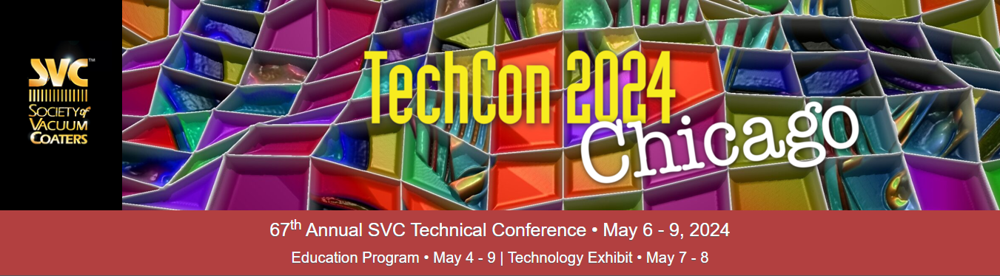
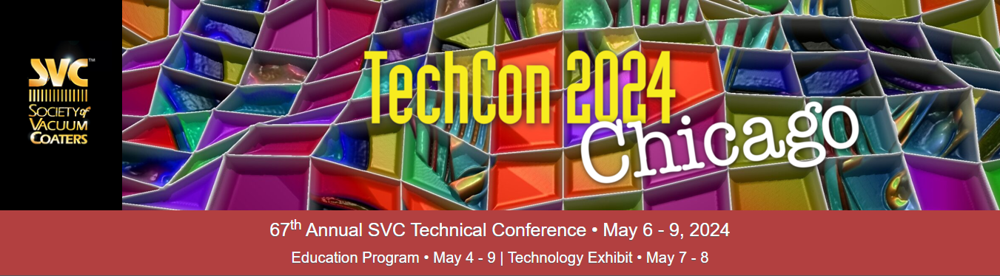

Our History
TechCon started in 2010 as a small developer meetup and has grown into a globally recognized technology conference.
TechCon started in 2010 as a small developer meetup and has grown into a globally recognized technology conference.
To foster innovation, collaboration, and the advancement of technology by bringing together visionaries and practitioners in the tech world.

Jane Doe – Renowned AI Researcher and keynote speaker in 2022.
John Smith – Cybersecurity expert and panelist since 2019.